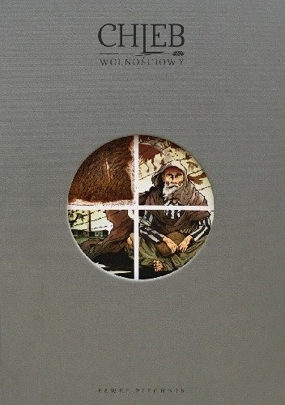

Menu KSIĄŻEK
Wróc do działu Komiksy
"Chleb Wolnościowy"
Krótki opis książki:
Obóz koncentracyjny w Lublinie, potocznie nazywany Majdankiem, istniał od października 1941 r. do lipca 1944 r.
Pod względem liczby uwięzionych i bilansu ofiar należał do największych obozów,
jakie Trzecia Rzesza założyła w Europie w latach 1933 – 1945. Na Majdanek deportowano ok. 150 tys. więźniów wielu narodowości,
najwięcej Żydów, Polaków i Białorusinów. Z powodu głodu i chorób, a także w wyniku rozstrzeliwań i eksterminacji w komorach gazowych zginęło tutaj ok. 80 tys. osób.
Po raz pierwszy Państwowe Muzeum na Majdanku wydaje komiks oparty na relacjach byłych więźniów niemieckiego nazistowskiego obozu,
stworzony przez uznanego artystę Pawła Piechnika. Komiks stanowi zbiór graficznych opowieści o losach jedenastu więźniów Konzentrationslager Lublin.
Autor w swojej koncepcji wykorzystał fragmenty książek Niebo bez ptaków Danuty Brzosko-Mędryk i Pole śmierci Andrzeja Stanisławskiego,
relację Jolanty Nowakowskiej-Korzeniewskiej oraz wspomnienia zawarte w opracowaniu Marty Grudzińskiej Majdanek.
Obóz koncentracyjny w relacjach więźniów i świadków.
Sformułowanie „chleb wolnościowy" było używane przez osadzonych w obozach koncentracyjnych w czasie II wojny światowej.
Oznaczało chleb wypiekany poza obozem i jednoznacznie kojarzyło się z tęsknotą za domem.
Tytuł komiksu wyraża niezbywalne prawo człowieka do wolności.„Chleb wolnościowy"był i jest dzisiaj wartością,
która wskazuje na różne postawy ludzkie,przedstawionew trzech częściach komiksu: O głodzie, O śmierci, O wolności.
Tym, co łączyło współwięźniów i dawało siłę do codziennej walki o życie, była szeroko pojęta nadzieja wolności.
Komiksowi towarzyszą: krótkie posłowie historyczne, słownik terminów i biogramy więźniów, których historie stały się kanwą narracji.

Informacje oraz zdjecia zostały zaczerpnięte ze strony Lubimyczytać.pl
©Strona została wykonana przez
Aleksandrę Oblak (informacje o książkach)
oraz Mateusza Stanikowskiego (strona internetowa)
2a - 4LO Lublin